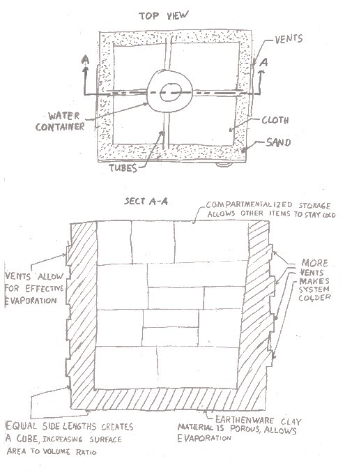

Freezing and Cooling Technologies
This project was intended as a submission to a NineSigma Innovation Contest: New and Novel Freezing and Cooling Technologies
The purpose of this challenge was to design an innovative technology to chill and store food without accessing power from the grid. My group and I came up with a solution based loosely from a Zeer Pot. Our solution was to design a pot with a layer of sand or soil around it, surrounding by another pot of a semi-permeable membrane. Water would be added to the sand and when the water evaporated, the entire system would decrease in temperature.


To gain a visual understanding, we built a sketch model of one our designs. A pyramid shape was chosen because research showed that such a shape has a high surface area to volume ratio, meaning the most cooling will occur. However, a flaw with this deisgn was that the bottom of the fridge was inaccessible, and made this an impractical design.
The design we settled upon was a cube shape, with a door at the front of the fridge. A water supply would be connected to the top of the system to replenish the water that evaporates out of the sand to keep a constant cooling effect. I drew a section view of the proposed model to outline how the system worked.
To demonstrate that our design worked, we built a prototype. An exact model could not be built, but the intention was to show that the system decreased in temperature. After allowing the system to cool for a few hours, the thermometer showed a decrease in temperature, showing that our solution worked. Although this design fell short of the target temperature, the cooling effect was apparent.
Read the full report here.